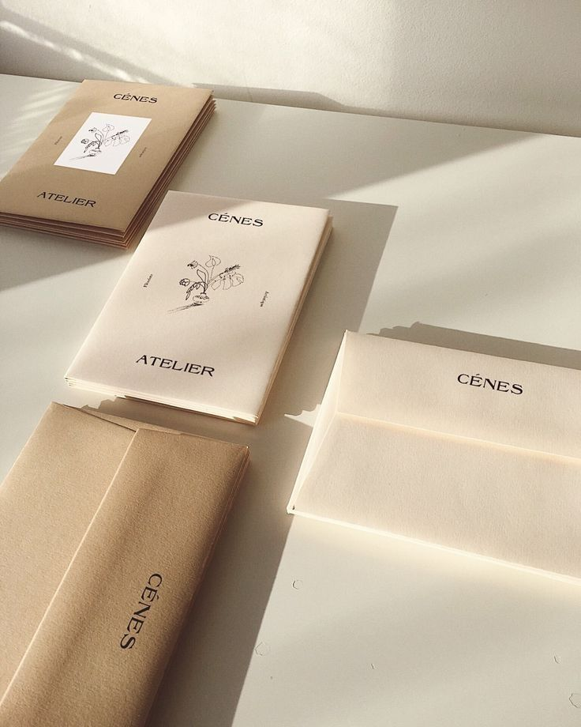
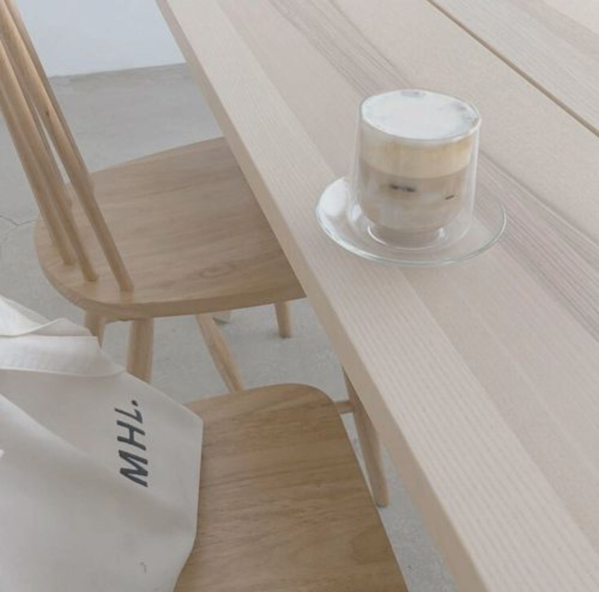

CENES
European travelers to the Near East brought back stories of an unusual dark black beverage. By the 17th century, coffee had made its way to Europe and was becoming popular across the continent.
Some people reacted to this new beverage with suspicion or fear, calling it the “bitter invention of Satan.” The local clergy condemned coffee when it came to Venice in 1615. The controversy was so great that Pope Clement VIII was asked to intervene. He decided to taste the beverage for himself before making a decision, and found the drink so satisfying that he gave it papal approval.
Despite such controversy, coffee houses were quickly becoming centers of social activity and communication in the major cities of England, Austria, France, Germany and Holland. In England “penny universities” sprang up, so called because for the price of a penny one could purchase a cup of coffee and engage in stimulating conversation.
Coffee began to replace the common breakfast drink beverages of the time — beer and wine. Those who drank coffee instead of alcohol began the day alert and energized, and not surprisingly, the quality of their work was greatly improved. (We like to think of this a precursor to the modern office coffee service.)
By the mid-17th century, there were over 300 coffee houses in London, many of which attracted like-minded patrons, including merchants, shippers, brokers and artists.
Many businesses grew out of these specialized coffee houses. Lloyd's of London, for example, came into existence at the Edward Lloyd's Coffee House.
Coffee cultivation and trade began on the Arabian Peninsula. By the 15th century, coffee was being grown in the Yemeni district of Arabia and by the 16th century it was known in Persia, Egypt, Syria, and Turkey.
Coffee was not only enjoyed in homes, but also in the many public coffee houses — called qahveh khaneh — which began to appear in cities across the Near East. The popularity of the coffee houses was unequaled and people frequented them for all kinds of social activity.
Not only did the patrons drink coffee and engage in conversation, but they also listened to music, watched performers, played chess and kept current on the news. Coffee houses quickly became such an important center for the exchange of information that they were often referred to as “Schools of the Wise.”
With thousands of pilgrims visiting the holy city of Mecca each year from all over the world, knowledge of this “wine of Araby” began to spread.
HOW TO MAKE LATTE
A latte is a coffee drink that is normally made with espresso, steamed milk, and milk foam.
A cappuccino is very similar, but it has a greater percentage of foamed milk to steamed milk.
A macchiato has no steamed milk added to the espresso, but a little cap of milk foam.
Cafe au lait has only warm steamed milk added to coffee (sometimes espresso) and no foam.
All of these coffee shop drinks are actually on a continuum. A very “wet” cappuccino with a lot of steamed milk is sliding into latte territory, and what one coffee bar calls a cappuccino might actually be a macchiato elsewhere.
The point is, the ratio of espresso, warm milk, and milk foam can all be adjusted to your precise liking when you make a drink at home, and you can call it whatever you like in the privacy of your own kitchen.
We love our iced coffee in the summer, but fall and winter belong to the latte. We love to sit inside on a chilly day with a hot, frothy latte or cappuccino. But a latte shouldn’t just be a coffee shop treat. Even without an espresso machine, a milk frother, or other toys of the trade, you can make a pretty decent latte at home — and yes, it will have a beautiful cap of foam.
Here’s how we do it when we want a latte at home, to sip in the morning, or with a visiting friend.
This can make a huge difference in the texture of your coffee. You don’t want to just mix frothed milk with espresso and call it a day. While it might taste good, that’s a macchiato, not a latte.
So what’s the difference? Think about it like this: you can have steamed milk by itself, but you can’t have froth without steamed milk. Delicate milk bubbles can’t survive without heat
It's half the fun of going to your neighborhood coffee shop: That moment when your barista presents you with a warm, freshly made, foam-topped latte, complete with lovely latte art. A perfect steamed-milk flower may look like magic, but once you've learned how to make latte art, you'll see it only adds a few seconds to the whole process. And it always makes that morning or afternoon pick-me-up feel like something special.
Have you always wanted to learn how to make latte art at home? We get that! At ChefSteps, we're all about perfecting those special touches that take a dish or beverage from good to great -- and espresso drinks are no exception. To take our latte-art game up a level, we invited java expert Charles Babinski, co-owner of G&B Coffee and Go Get Em Tiger in Los Angeles, to our Seattle headquarters to show us how to draw a beautiful "rosetta" atop our lattes. We've practiced the technique a bit, and now we're here to pass those hard-won skills on to you.
Will it take a little practice? We won't lie to you: Unless you're the Georgia O'Keefe of milk paintings, it definitelly will. But it's as much fun to practice playing with dairy products as it is to nail those goregeous flower designs. So read on for all the information you need to learn how to make latte art like a pro. Once you've perfected the process, invite some friends over and make some of Martha's specialty latte recipes. Think: Pumpkin Spice, Spiced Chai, Eggnog and Matcha Green Tea.


THANK YOU FOR YOUR VISITING
if you have any question, please contact for us by these hotline
Email: Cenescf@gmail.com
Phone: +8610093571722
Address: Dedi road, Fengtai district,Beijing,China.